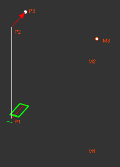
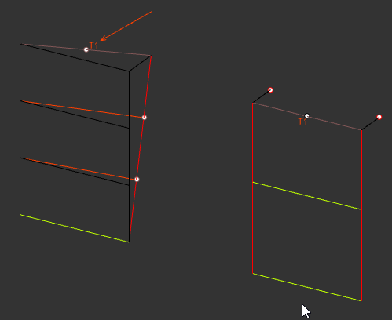
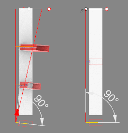
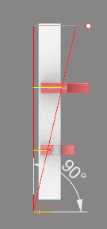
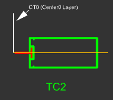

CT0
Transom 방향을 Mullion 각도와 관계없이 수직 방향으로 유지하기 위해 Center1 대신 Center0를 사용하는 기능입니다.
Mullion은 별도의 방향점이 존재하므로 Mullion Section의 Center1 점들이 Mullion Line의 시작점, 끝점, 방향점에 맞춰 정렬됩니다.
| Section 기준점 | Mullion Line 정렬 기준 |
|---|---|
| P1 | Mullion Line의 시작점 M1에 Align됩니다. |
| P2 | Center1 시작점의 수직 방향점이며 Mullion Line의 끝점 M2에 Align됩니다. |
| P3 | Center1 끝점이며 Mullion Line의 방향점 M3에 Align됩니다. |

Transom은 방향점이 별도로 존재하지 않으며, 양쪽 2개의 Mullion을 기준으로 방향점을 만듭니다. 두 Mullion의 방향이 같으면 두 Mullion 끝점 사이의 중간점이 Transom Center1의 방향점이 됩니다.
두 Mullion의 방향이 서로 다른 경우에는 어느 한쪽에 치우치지 않는 중간점을 사용합니다. 이때 Mullion의 유리면과 Transom의 유리면이 정확히 일치하지 않을 수 있으며, Transom이 뒤로 살짝 누운 각도로 모델링될 수 있습니다.



Unit의 Head, Sill처럼 Mullion 각도와 관계없이 항상 수평 또는 수직 기준을 유지해야 하는 경우, 방향선을 Center1 대신 Center0로 작성합니다. 명령어 CT0를 사용하면 Transom 방향이 항상 수직 방향으로 나타납니다.

Center1을 사용하고, Head/Sill처럼 일정한 방향을 유지해야 하는 조건에서는 Center0를 사용합니다.